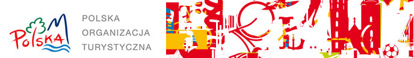

|
|
|
Polska na 25. Międzynarodowych Targach Turystycznych TT Warsaw
Na jubileuszowe 25. Międzynarodowe Targi Turystyczne TT Warsaw, Polska Organizacja Turystyczna przygotowała bogate w atrakcje i nowoczesne technologie stoisko. To właśnie Polska jest w tym, szczególnym dla TT Warsaw, roku krajem partnerskim. Pozwoli to na szczególne zaakcentowanie potencjału turystycznego naszej ojczyzny i podkreślenie jego piękna oraz różnorodności.
Na polskim, ponad 60 metrowym stoisku promowane będą m.in. nagrodzone prestiżowymi Certyfikatami POT, najlepsze produkty turystyczne 2017 roku. To doskonała okazja, by zapoznać się z ofertą dziesięciu laureatów tego konkursu, poznać ich doświadczenia i drogę do sukcesu.
W pełnym kolorów i gościnnej atmosfery polskim pawilonie nie zabraknie także materiałów dotyczących nagrodzonych modelowych ośrodków turystycznych w konkursie EDEN. Wielki Gościniec Litewski, Muzeum Kultury Ludowej Pomorza w Swołowie i główny zwycięzca tego plebiscytu – Wielokulturowy nurt Bugu, to doskonałe przykłady celów podróży, uwzględniających potrzeby środowiska, ludności lokalnej i turystów rozwijających jednocześnie atrakcyjny ekonomicznie produkt turystyczny.
To jednak nie koniec atrakcji. Polska Organizacja Turystyczna stawia na nowe technologie. Po raz pierwszy na naszym stoisku zostanie uruchomione kino VR, czyli kino w wirtualnej rzeczywistości.
W tym – debiutanckim pod tym względem – roku, przygotowaliśmy krótką serię czterech filmów promocyjnych, nakręconych w technologii 360 stopni. W Polsce jest to pierwszy tak zaawansowany i immersyjny projekt, w którym historia bohaterów jest wtopiona w najpiękniejsze miejsca naszego kraju. To nowe podejście do opowiadania o atrakcjach turystycznych, gdzie za każdym razem, ten sam film można obejrzeć z zupełnie z innej perspektywy.
Wszyscy goście polskiego pawilonu, będą mogli, dzięki zastosowaniu tej technologii, poczuć magię wniknięcia w filmy sferyczne i stania się uczestnikiem opowiadanej historii. Doświadczenie zanurzenia się w otaczające nas obraz i dźwięk, jest niezwykle autentyczne i sugestywne. Sprawia, że niemalże można poczuć wiatr we włosach na Kasprowym Wierchu lub zatopić się w zachodzie słońca na wędrujących wydmach w Słowińskim Parku Narodowym.
Zapraszamy do naszego świata - „Polska 360”, gdzie bohaterami w kinie są zarówno aktorzy jak i goście odwiedzający targi TT Warsaw. Nie może tam Państwa zabraknąć.
|
|

|
|
Nie chcesz otrzymywać e-biuletynów prześlij zwrotny e-mail o treści "NIE - e-biuletyn"
Adres e-mail otrzymany z bazy Międzynarodowych Targów Polska Sp. z o.o. na podstawie umowy użyczenia. List został wysłany na podstawie udzielonej zgody na otrzymywanie informacji handlowych, o których mowa w art. 10 ustawy z dn. 18.07.2002 o świadczeniu usług drogą elektroniczną, przesyłanych przez Międzynarodowe Targi Polska Sp. z o.o. lub MT Targi Polska SA na podstawie ważnej umowy. Zgody otrzymaliśmy w trakcie rejestracji na imprezy targowe organizowane przez Międzynarodowe Targi Polska Sp. z o.o. lub MT Targi Polska SA lub adres e-mail otrzymany z bazy Mediaten Sp. z o.o. na podstawie umowy użyczenia. List został wysłany na podstawie udzielonej zgody na otrzymywanie informacji handlowych, o których mowa w art. 10 ustawy z dn. 18.07.2002 o świadczeniu usług drogą elektroniczną, przesyłanych przez Mediaten Sp. z o.o.lub inne podmioty korzystające z danych Mediaten Sp. z o.o. na podstawie ważnych umów.
|